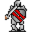

Lleglaris¶Where to find Lleglaris: Foaming Flask Tavern: tradehouse1
{ .sprite }
| Type | NPC (can be spoken to; cannot be attacked) |
| Role | Shopkeeper; starts Long lost memories |
| Found in | Foaming Flask Tavern |
| Entry ID | lleglaris |
| Introduced | v0.7.0 or earlier |
Shop stock¶
| Item | Chance | Qty |
|---|---|---|
| Giant's claymore | 100% | 1 to 5 |
| Axe of whirlwind | 100% | 1 to 5 |
| Superior defender's claymore | 100% | 1 to 5 |
| Sharpened hatchet | 100% | 1 to 5 |
| Serpent's fang | 100% | 1 to 5 |
| Worn plated gloves | 100% | 1 to 5 |
| Executioner's greataxe | 100% | 1 to 5 |
| Light black axe | 100% | 1 to 5 |
| Axe of fear | 100% | 1 to 5 |
| Steel glaive | 100% | 1 |
Quests¶
- Long lost memories: stages 10, 15, 30, 40
Dialogue simulator¶
Set the quest stages, items and other conditions that apply to your game, then start the conversation with Lleglaris. The simulator applies the game's own rules: it performs the same silent checks, offers only the options that would be shown in the game, and applies their effects (quest stages, items handed over, rewards) as the conversation proceeds.
Rules verified against v0.8.18 game code (ConversationController.java) and dialogue data.
Dialogue (24 lines)
What the dialogue says, exactly as in the game files. Lines are listed once; links jump to the line a choice leads to.
lleglaris (silent check: the first matching branch below is taken)
- branch 1 (if reached stage 30 of Long lost memories) → lleglaris_r4
- branch 2 (if reached stage 15 of Long lost memories) → lleglaris_r1
- branch 3 (if reached stage 10 of Long lost memories) → lleglaris15
- branch 4 → lleglaris0
lleglaris_r4 Lleglaris: “Thank you for finding my amulet.”
- Next → lleglaris_r5
lleglaris_r1 Lleglaris: “Hi again. Did you find my amulet?”
- “Can you tell me your story again?” → lleglaris8
- “Yes, here it is.” (if hand over 1× Lleglaris' amulet) → lleglaris_r3
- “Still looking for it.” → lleglaris_r2
lleglaris15 Lleglaris: “Go look just east of my cabin here. You probably need to take the path north when you exit the cabin, and then head east.” — effects: sets stage 15 of Long lost memories
lleglaris0 Lleglaris: “Are you sure you should be here? Maybe you should go play with ... your toys or something?”
- “Watch it. Do you even know who you're talking to?” → lleglaris2
- “Fine. I'll leave.” → conversation ends
- “Hey, no need to be rude.” → lleglaris1
- “Hey, those look like some nice items you have there. Care to trade?” → lleglaris_rej
lleglaris_r5 Lleglaris: “Maybe you really are an experienced adventurer after all.”
- Next → lleglaris_r6
lleglaris8 Lleglaris: “I've lost an amulet of mine. I was out in the woods around the cabin here and heard a noise coming from the east.”
- Next → lleglaris9
lleglaris_r3 Lleglaris: “Yes, that's the one. It's good to see it back in my hands again.” — effects: sets stage 30 of Long lost memories
- Next → lleglaris_r4
lleglaris_r2 Lleglaris: “OK then. I won't keep you.”
lleglaris2 Lleglaris: “Hah! Please enlighten me.”
- “I was the one who slew the lich Toszylae between Loneford and Brimhaven.” (if reached stage 70 of An involuntary carrier) → lleglaris3
- “See this amulet that I'm wearing? This is Marrowtaint.” (if wearing Marrowtaint) → lleglaris4
- “See this ring that I am wearing? This is the Ring of lesser Shadow.” (if wearing Ring of lesser Shadow) → lleglaris4
- “I was the one who helped solve the mystery in Loneford.” (if reached stage 54 of Flows through the veins) → lleglaris3
- “I saved the settlement of Prim from the attacks from Blackwater mountain.” (if reached stage 240 of Clouded intent) → lleglaris3
- “I helped the Blackwater mountain settlement make the attacks from Prim stop.” (if reached stage 240 of The agent and the beast) → lleglaris3
- “I am the son of an ordinary farmer in a minor settlement called Crossglen, not far west from here! I've even killed a…” → lleglaris5
- “Never mind.” → conversation ends
lleglaris1 Lleglaris: “Ha ha. I can be as rude as I want!”
- “Whatever.” → conversation ends
- “Watch it. Do you even know who you're talking to?” → lleglaris2
lleglaris_rej Lleglaris: “With you? No way. You look way to inexperienced.”
- “Watch it. Do you even know who you're talking to?” → lleglaris2
- “Fine. Maybe later then.” → conversation ends
lleglaris_r6 Lleglaris: “Anyway, see this table here? It's just some old trinkets that I've gathered along the years. Maybe some of them could come in handy for you?” — effects: sets stage 40 of Long lost memories
- “Let me see what you have.” → shop opens
lleglaris9 Lleglaris: “Tired as I was, I didn't notice the things coming out from behind the trees fast enough.”
- Next → lleglaris10
lleglaris3 Lleglaris: “That was you? Hah! And you expect me to believe that?”
- Next → lleglaris7
lleglaris4 Lleglaris: “Good for you. It looks just like any other trinket to me.”
- Next → lleglaris7
lleglaris5 Lleglaris: “Ha ha! Now, that's funny!”
- Next → lleglaris6
lleglaris10 Lleglaris: “Undead things. Yuck, that smell.”
- Next → lleglaris11
lleglaris7 Lleglaris: “If you're such an experienced adventurer, I'm sure a small task of mine wouldn't be any problem for you?”
- “What task?” → lleglaris8
lleglaris6 Lleglaris: “You have my best wishes, kid. Hope you'll get to see the world some day.”
lleglaris11 Lleglaris: “I saw this hole in the ground that they seemed to come out of. The ground had been completely corrupted around it.”
- Next → lleglaris12
lleglaris12 Lleglaris: “Anyway, I ran away and my amulet must have gotten stuck on a branch or something like that.”
- “I'll go look for your amulet.” → lleglaris14
- “Undead? No way, I'm out.” → lleglaris13
lleglaris14 Lleglaris: “Good.” — effects: sets stage 10 of Long lost memories
- Next → lleglaris15
lleglaris13 Lleglaris: “Yeah, that's what I though as well.”
Version history¶
| Version | Change |
|---|---|
| v0.7.0 | Present in v0.7.0 (earliest release tracked) |
| v0.7.2 | Dialogue: 4 lines changed · text: “Ok then. I won't keep you.” → “OK then. I won't keep you.” · text: “Are you sure you should be here? Maybe you should go play with .. you…” → “Are you sure you should be here? Maybe you should go play with ... yo…” |
| v0.8.18 | Dialogue: 1 line changed |
Verified against v0.8.18 and every earlier release back to v0.7.0 (game data compared release by release).
Technical information
| Entry ID | lleglaris |
| Spawn group | lleglaris |
| Loot table | shop_lleglaris |
| Conversation | lleglaris |
| Faction | – |
| Movement | – |
| Icon | monsters_ld1:41 |
| Defined in | res/raw/monsterlist_v070_npcs.json |
Raw data:
{
"id": "lleglaris",
"name": "Lleglaris",
"iconID": "monsters_ld1:41",
"phraseID": "lleglaris",
"droplistID": "shop_lleglaris"
}
Community notes¶
Written by players, not generated from game data. Observations: what players notice in-game · Lore: the in-world story · Trivia: real-world facts, references, development history · Theory / speculation: unconfirmed ideas; may just be unfinished content
Observations¶
No notes yet. Contributions are welcome: add a note.
Lore¶
No notes yet. Contributions are welcome: add a note.
Trivia¶
No notes yet. Contributions are welcome: add a note.
Theory / speculation¶
No notes yet. Contributions are welcome: add a note.
Data from v0.8.18